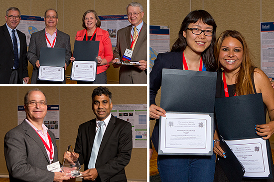

Epicenter team members presented papers at ASEE Annual Conference and Exposition in June 2014. Top left: Phil Weilerstein and Liz Nilsen accept the 1st place best paper award; bottom left: Phil Weilerstein accepts the Journal of Engineering Entrepreneurship Pioneer Award; right: Qu Jin and Janna Rodriguez accept the 2nd place best paper award. Photos by Shawn Spence, shawnspence.com.
Epicenter team members presented their latest research findings at the ASEE Annual Conference and Exposition June 15-18, 2014. The eight sessions and panel presentations focused on findings from Epicenter research questions and Epicenter’s Pathways to Innovation program for faculty. Topics of the sessions ranged from engineering students’ entrepreneurial characteristics to an examination of change in entrepreneurship education through a faculty development program.
Team members received first and second place awards for best paper in the ASEE Entrepreneurship and Engineering Innovation Division, respectively, for “Supporting Change in Entrepreneurship Education: Creating a Faculty Development Program Grounded in Results from a Literature Review” and “Comparing Engineering and Business Undergraduate Students’ Entrepreneurial Interests and Characteristics.” Phil Weilerstein, Deputy Director of Epicenter and president of NCIIA, received the Journal of Engineering Entrepreneurship Pioneer Award.
Download the papers below:
Papers
Supporting Change in Entrepreneurship Education: Creating a Faculty Development Program Grounded in Results from a Literature Review (Download PDF)
Sarah Giersch (Broad-based Knowledge), Dr. Flora P. McMartin (Broad-based Knowledge, LLC), Elizabeth Nilsen (Epicenter, NCIIA), Dr. Sheri Sheppard (Epicenter, Stanford), and Mr. Phil Weilerstein (Epicenter, NCIIA)
* Award: 1st place, best research paper, ASEE Entrepreneurship and Engineering Innovation Division (ENT) 2014
Comparing Engineering and Business Undergraduate Students’ Entrepreneurial Interests and Characteristics (Download PDF)
Dr. Qu Jin, Dr. Shannon Katherine Gilmartin, Dr. Sheri D. Sheppard, and Dr. Helen L. Chen (Epicenter, Stanford)
* Award: 2nd place, best research paper, ASEE Entrepreneurship and Engineering Innovation Division (ENT) 2014
Exploring Entrepreneurial Characteristics and Experiences of Engineering Alumni (Download PDF)
Miss Janna Rodriguez, Dr. Helen L. Chen, Dr. Sheri Sheppard, Dr. Qu Jin, and Ms. Samantha Ruth Brunhaver (Epicenter, Stanford)
Predicting Entrepreneurial Intent among Entry-Level Engineering Students (Download PDF)
Dr. Mark F. Schar, Dr. Sarah L. Billington, and Dr. Sheri D. Sheppard (Epicenter, Stanford)
Does Teaching Matter? Factors that Influence High School Students’ Decisions on Whether to Pursue College STEM Majors (Download PDF)
Dr. Gary Lichtenstein (Quality Evaluation Designs), Dr. Martin L. Tombari (University of Texas, Austin), Dr. Sheri D. Sheppard (Epicenter, Stanford), and Ms. Kaye Storm (Stanford University)
Utilizing Concept Maps to Improve Engineering Course Curriculum in Teaching Mechanics (Download PDF)
Ruben Pierre-Antoine, Dr. Sheri D. Sheppard, and Dr. Mark Schar (Epicenter, Stanford)
Evaluation of Impact of Web-based Activities on Mechanics Achievement and Self-Efficacy (Download PDF)
Prof. Sarah L. Billington (Epicenter, Stanford), Dr. Sheri D. Sheppard (Epicenter, Stanford), Prof. Robert C Calfee (Stanford University), and Dr. Peggy C. Boylan-Ashraf (Stanford University)
Students' Perspectives on Homework and Problem Sets in STEM Courses (Download PDF)
Ms. Lea Marie Eaton, Dr. Sheri D. Sheppard, and Dr. Helen L. Chen (Epicenter, Stanford)
Presentations:
Phil Weilerstein spoke at the panels "Entrepreneurship Opportunities in the Workplace: Students Participating in Co-op and Experiential Education" and "Building a National Innovation Ecosystem." Phil received the Journal of Engineering Entrepreneurship Pioneer Award.